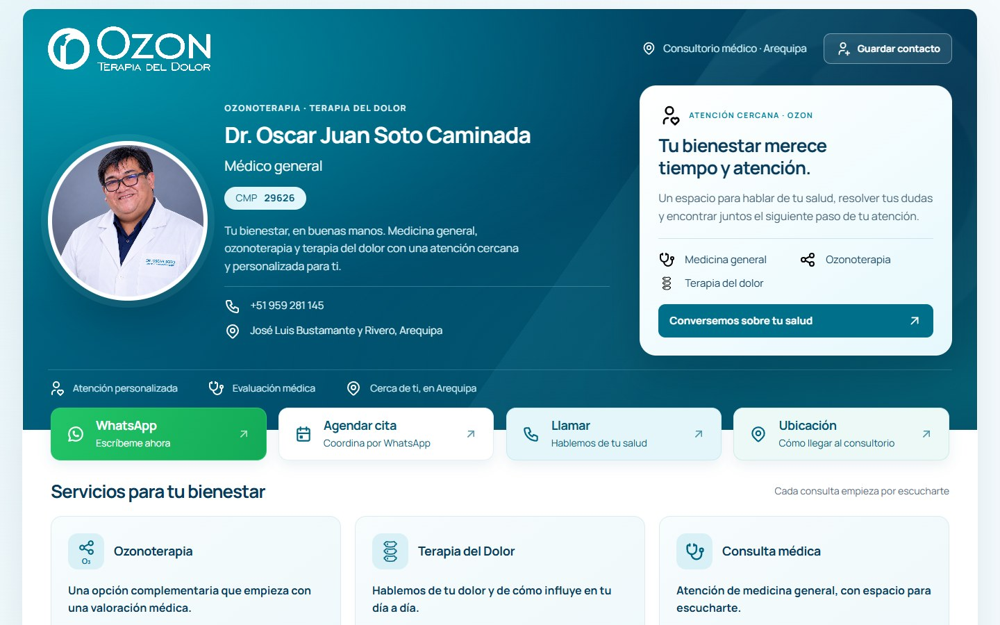
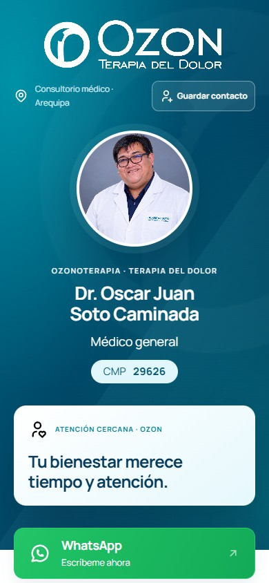
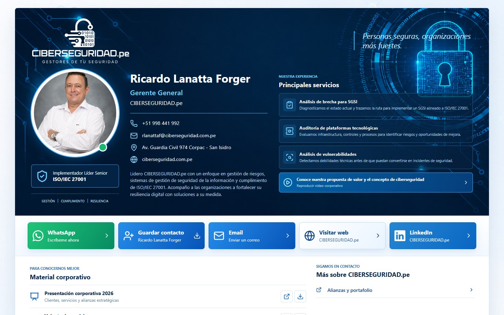
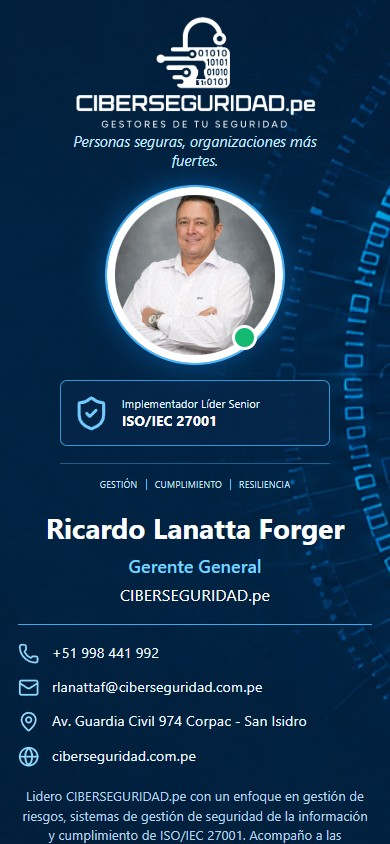

OZON Terapia del Dolor
Sitio web de salud
Tratamientos, especialista y orientación para solicitar una consulta, en una web cercana y clara.
Hola, soy Oscar Soto
Desarrollador full stack en Perú. Creo sitios web y apps a la medida de tu negocio.
Desarrollo full stack con enfoque en ciberseguridad.
Diseño que se adapta
Desarrollo a medida
Acompañamiento al publicar
Salud, música, comercio y tecnología.
Cada proyecto, con su propia identidad.
Sitio web de salud
Tratamientos, especialista y orientación para solicitar una consulta, en una web cercana y clara.
Sitio web de una banda
La identidad de una banda de punk melódico, con su música, vídeos, fechas y comunidad.
Catálogo y carrito de compras
Cartas Pokémon por colección e idioma, con disponibilidad, carrito y solicitud por WhatsApp.
Sitio web de salud
Servicios, proceso de atención y equipo especializado, con una navegación centrada en el paciente.
Landing de producto IoT
Presentación de un proyecto de salud preventiva que conecta un dispositivo, una plataforma y sus usuarios.


Tarjeta de presentación digital
Presentación profesional con servicios, ubicación y contacto en un mismo enlace. Con acceso por QR y soporte NFC como complemento.


Tarjeta de presentación corporativa
Presentación de servicios de ciberseguridad, material corporativo y canales de contacto. Compatible con un soporte NFC opcional.
Una buena web también necesita reglas claras y datos bien organizados. Elige tu servicio y una fecha para conversar; el flujo prepara tu solicitud por WhatsApp.
La fecha es una propuesta. Envíame el mensaje por WhatsApp y coordinamos la disponibilidad.
Elige un servicio y tu fecha preferida. Lo coordinamos por WhatsApp.
Tu nombre, el servicio y la fecha se preparan en tu navegador. Si envías el mensaje por WhatsApp, recibiré esos datos y tu contacto para atender la consulta. Cómo uso tus datos.
El nombre y la fecha deben estar completos. La fecha debe ser de hoy en adelante.
function validarReserva(nombre, fecha, hoy) { if (!nombre.trim() || !fecha) return "Completa tus datos"; if (fecha < hoy) return "Elige hoy o después"; return "ok";}Elige una fecha para ver el resultado de la validación.
Tus datos están listos para WhatsApp.
Últimas solicitudes preparadas en esta visita. El envío se completa en WhatsApp; este historial se borra al recargar.
Todavía no has preparado una solicitud.
| Nombre | Servicio | Fecha |
|---|
Si no se abrió, continúa desde este enlace.
Desde Perú,
para tu próximo proyecto.
Oscar Eduardo Soto Zorrilla
Me gusta entender un problema y convertirlo en algo que puedas usar.
Trabajo en la interfaz y en la lógica que la sostiene. También desarrollo aplicaciones web y móviles con Kotlin y Flutter. Me interesa que cada decisión tenga un motivo: una navegación más clara, una tarea más sencilla o una página que cargue mejor.
Estudio Ingeniería de Software en y sigo aprendiendo a través de proyectos. Complemento el desarrollo full stack con conocimientos especializados en ciberseguridad y una mirada atenta a la protección de la información.
Un punto de partida claro. El alcance lo definimos juntos.
Desde una primera landing hasta una web con catálogo y contenido administrable.
Para presentar tu negocio
S/ 650
Más espacio para tu empresa
S/ 1,400
Para vender o recibir reservas
S/ 2,600
Mantenimiento para que siga funcionando bien.
Cuéntame qué quieres construir. Una idea, una referencia o una pregunta son un buen inicio.
Hablemos por WhatsAppWhatsApp: +51 987 509 361
Trato directo, desde el primer mensaje.
Conversamos sobre tu negocio y lo que necesitas resolver.
Definimos la estructura, desarrollamos y revisamos los avances contigo.
Probamos la web, la ponemos en línea y te ayudo con los siguientes pasos.